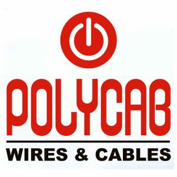

Civil Engineering
Details about Civil Engineering
Prominent Recruiters

polycab
hibond
adityabirla
Key Objectives of Training and Placement Cell:
1. To enhance the employability skills of students by arranging various training programs and workshops
2. To facilitate the process of placement and internships
3. To provide employment opportunities to the students
4. To interact and strengthen relationships with potential and existing recruiters.